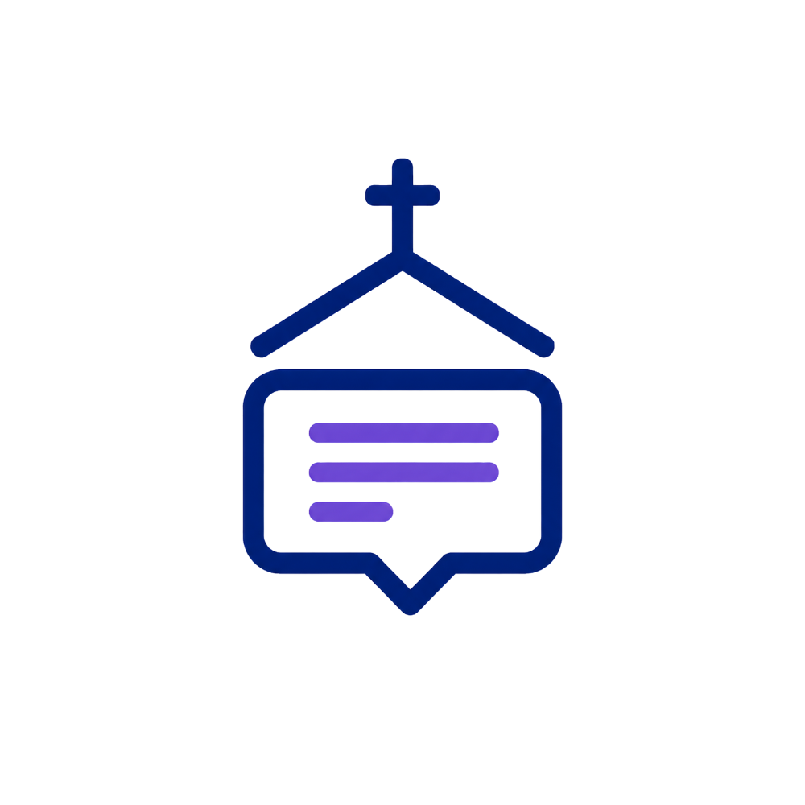

Local caption service
Church Cap is starting
Preparing the browser interface…
Local caption service
Preparing the browser interface…
Browser shortcuts
Application
Checking platform registration…
Maintenance
Church Cap checks a platform-specific signed channel. The local server and browser interface are not replaced unless you approve an available update.
Account recovery removes the stored operator password, signs out existing operator sessions, and reopens setup so you can create a password and choose a security mode.
Diagnostics remain disabled until their narrow native supervisor contract is implemented and tested.

Church Cap Desktop
The desktop application keeps the Church Cap server available when browser windows are closed. The full Operator interface remains in your normal web browser.
Captions can contain mistakes. A person should monitor important names, safeguarding information and pastoral content.